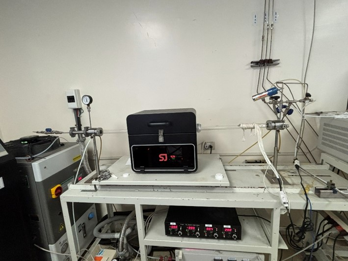
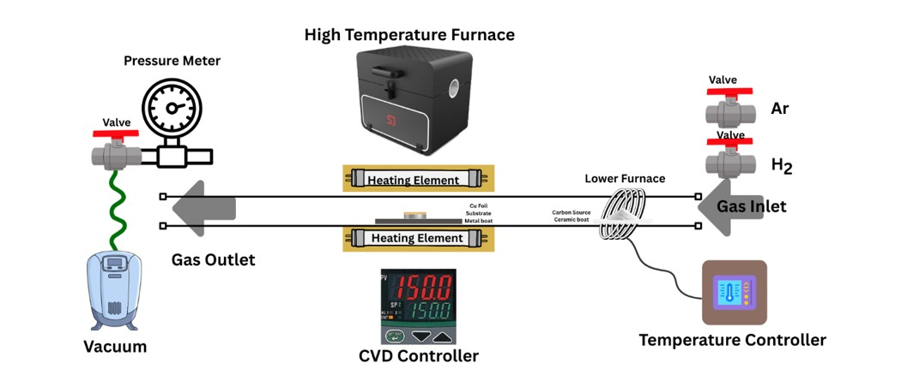
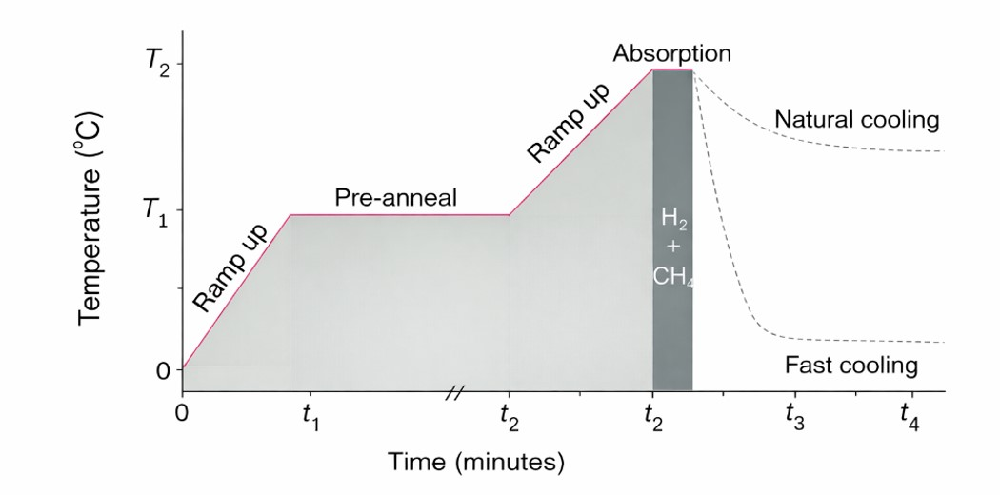
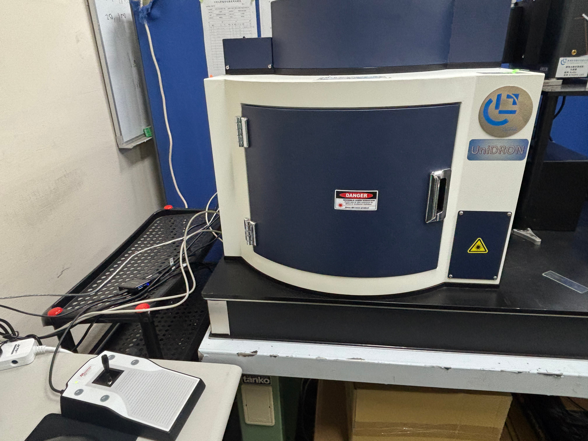
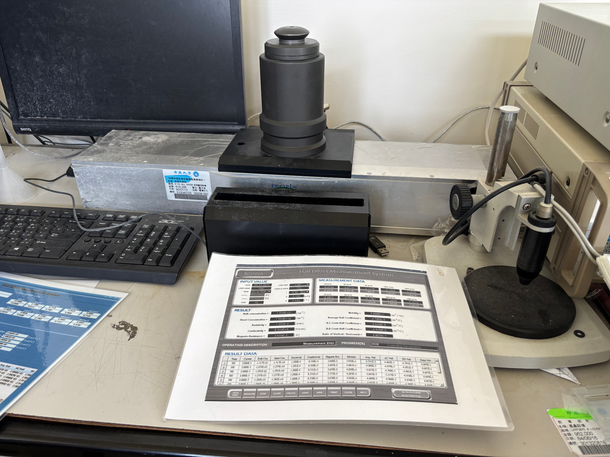

Electromechanical Stability of Transfer-Induced Multilayer Graphene
This project studies the fabrication and testing of multilayer graphene for a flexible piezoresistive sensor. The work combines graphene growth and transfer, material characterization, analog readout, and cyclic vibration testing.
Supervised by Professor Danny Wen-Yaw Chung
Graphene Growth
Graphene is grown on copper foil by atmospheric-pressure chemical vapor deposition (APCVD), using camphor as the carbon source.


Transfer and Sensor Structure
A PMMA support layer is used during transfer. After the copper is etched, the graphene is transferred onto a PET substrate with interdigitated electrodes. The flexible sensor is designed to convert mechanical strain into a resistance change.

Material Characterization
Raman Spectroscopy
Raman spectroscopy is used to examine the graphene structure and defect-related features.

Hall Measurement
Hall measurements are used to characterize the electrical properties of the graphene film.
